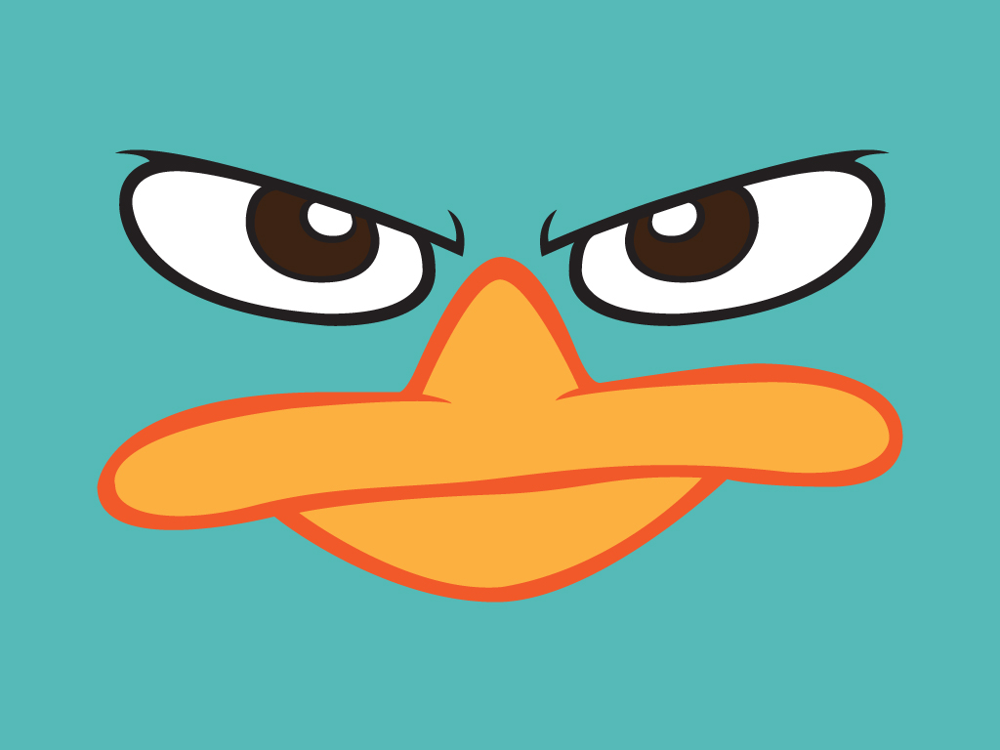

Por enquanto dá pra fazer quase tudo que poderia ser feito com Slides comuns...
Por exemplo uma lista de coisas ou tópicos...
Adicionar imagens com ou sem legendas...

Já falei que o apresentador pode rabiscar os slides? pois bem, tente clicando ou tocando o ícone caneta e depois rabiscando em qualquer lugar do slide...
você pode ainda alterar a cor da "caneta" clicando na paleta de cores que aparecerá no canto inferior direito quando a "caneta" estiver ativa...
Através da tag video do HTML5 é possível adicionar vídeos à página